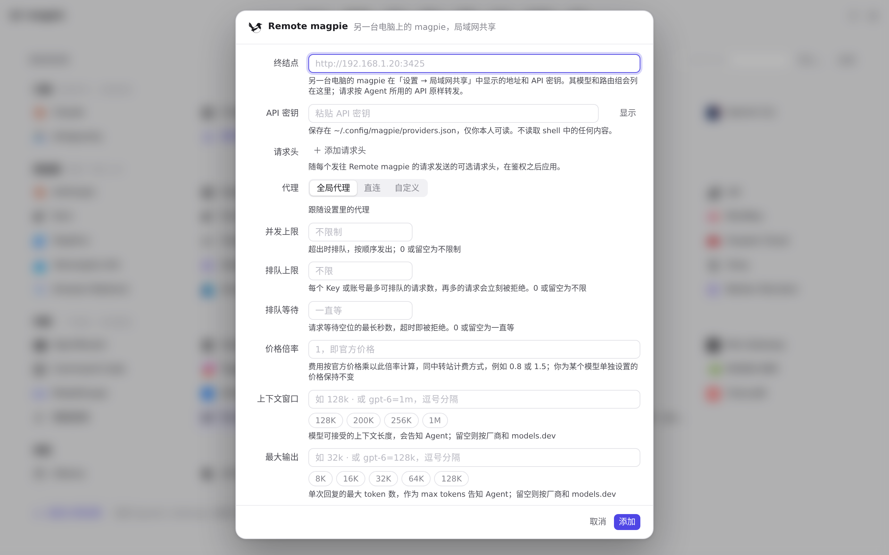
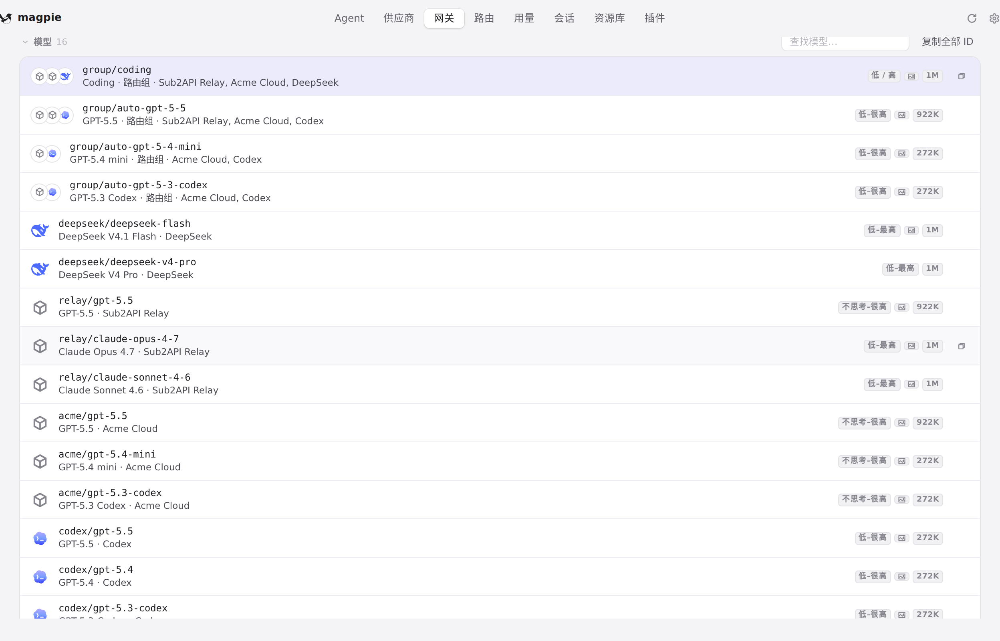

#1282 界面预览
commit 6307472 · 回到 PR · 远程 magpie 供应商现在会在取模型列表时一并请求并识别远端显式标记的决策模型（含 Clef 与自定义名），供应商编辑器因此拿到一份权威的决策模型列表（可以为空），不再按名字把 Jev Router 之类的聊天模型猜成决策模型；决策、检索与媒体请求也带上了调用方/会话归属。
红线是鼠标走过的轨迹，红色圆环是一次点击；底部文字是这一步在做什么。空格暂停，← → 逐段查看。
 Remote magpie 供应商的编辑器入口 · 供应商类型面板
Remote magpie 供应商的编辑器入口 · 供应商类型面板

Remote magpie 供应商的编辑器入口 · Remote magpie 的表单：地址与密钥，决策模型列表要保存并读到远端列表后才在这里出现
 网关 System One 的模型行 · System One 的示例与模型行：决策模型会出现在这一行
网关 System One 的模型行 · System One 的示例与模型行：决策模型会出现在这一行

网关 System One 的模型行 · 网关模型列表